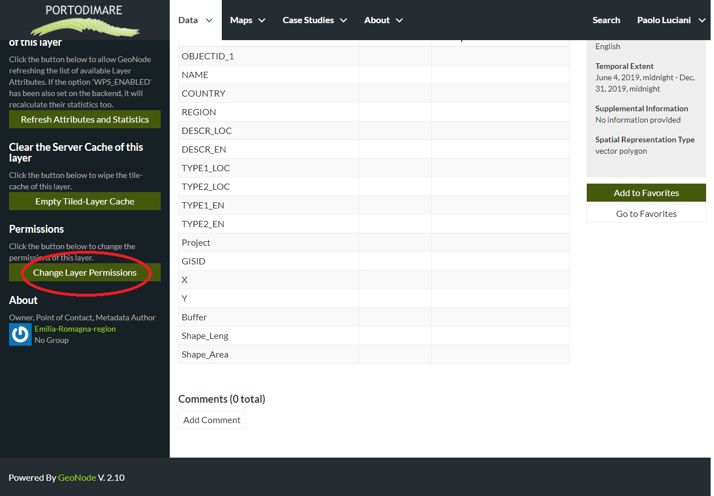
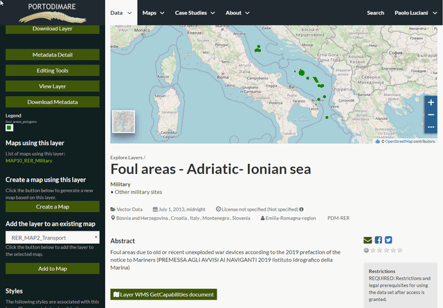

Changing the Layer Permissions¶
Warning
This function is enabled only for GAIR signed in user, and according layer permission.
By default only owners and related group can edit and manage layers, signed in user can download, and anyone can view them.
When creating or uploading a new Layer you have to set who can view, download, edit and manage that Layer, of course you can change permissions settings afterwards.
In order to modify the Layer Permissions settings you have to click the Change Layer Permissions button in the the left side of Layer page.
Through the Permissions Settings Panel you can add or remove permissions for users and groups.

Change Layer Permissions
You can set the following types of permissions:
- View allows to view the layer;
- Download allows to download the layer;
- Change Metadata allows to change the layer metadata;
- Edit Data allows to change attributes and properties of the layers features;
- Edit Style allows to change the layer style;
- Manage allows to update, delete, change permissions, publish and unpublish the layer.
Note
Maybe you need to change also the default Permissions settings, according to the visibility you want for the layer on the geoportal.
Remember to assign the permissions to your staff group, so all the group members will have those permissions.
The name of the groups are coded PDM+partner abbreviation (e.g.: PDMRER, PDMCORILA, etc.). If you start entering the digits, a drop down menu will show possible autofill keys.
Click on Apply Changes to save these settings. A message confirm if permissions succesfully updated.
The picture below shows an example.

Layer Permissions settings for users and groups